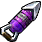

After rescuing the Gorons, it was time for Link to rescue the Zora's Domain, which has completely frozen over. The domain was silent as even the King had been trapped in a block of red ice. Outside where Jabu-Jabu used to rest was now empty, with ice floating in the water leading to a cavern off in the distance. Link would enter the Ice Cavern and pass through it searching for answers. Link would find blue fire that melted the red ice inside of the cave, also using it to melt the block around the King, in return gaining the Zora Tunic, allowing him to breathe underwater. At its end Link saw Shiek appear again, teaching him the Serenade of Water to be able to find Princess Ruto in the Water Temple. Before Link leaves, he finds a pair of Iron Boots that would be able to keep him held down to the bottom of a body of water. When he made it to the Water Temple, he found that Lake Hylia was devoid of its water, allowing easy access to the temple that lied on the floor of the lake. This labryinth of water appeared to be more complicated than any other temple or dungeon Link had seen so far, eventually finding Ruto as she guided him to a plaque on the wall before disappearing again, but this plaque allowed him to change the water level inside of the temple. With this he was able to pass through the temple until he reached a room where it appeared he was outside, with only the entrance door, chained exit door, and a small island with a single dead tree, all of it surrounded with shallow water. When Link went to check the exit door, he felt a presence behind him, himself. As he turned around he found the evil version of himself, Dark Link, holding the same equipment he had. Any attack was futile as Dark Link would block it with ease, but Dark Link not able to make any advancements either. After finding the uselessness of his sword against Dark Link, Link would then turn to something he would have never thought to use in combat, the Hookshot. With this he was able to stun Dark Link and defeat him. The illusion faded and the outside room turned into a normal room. From this battle, Link recieved the Longshot, a Hookshot that can go double the length. He used the Longshot for the rest of the temple and its keeper, Morpha, a giant amoeba. He used the Longshot to pull out its nucleus and attack it until he was defeated, the amoeba disappearing without a trace. With this he awoke the Sage of Water, Ruto, and recieved her support with the Medallion of Water. When Link appeared outside of the temple oncemore, Lake Hylia was filled with water again.
| PICTURE | NAME | DESCRIPTION | |
|---|---|---|---|
| Iron Boots | Makes Link really heavy | ||
|
Zora Tunic | Lets Link breathe underwater | |
|  | Longshot | Double lenght Hookshot |